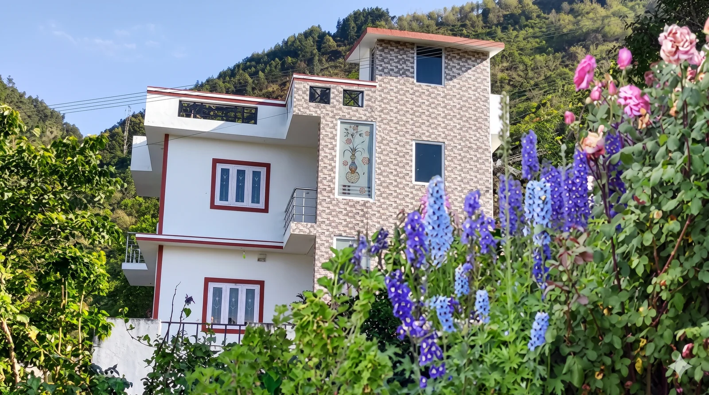
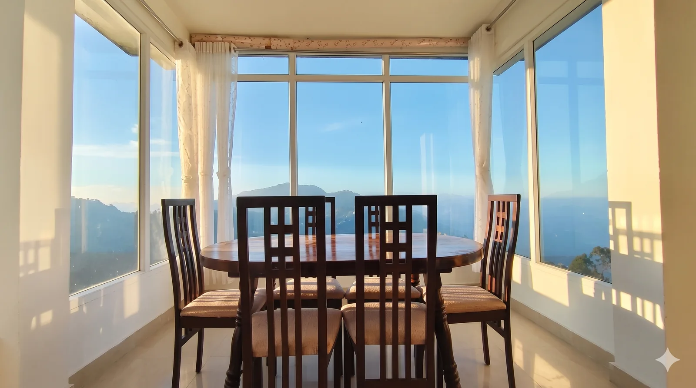
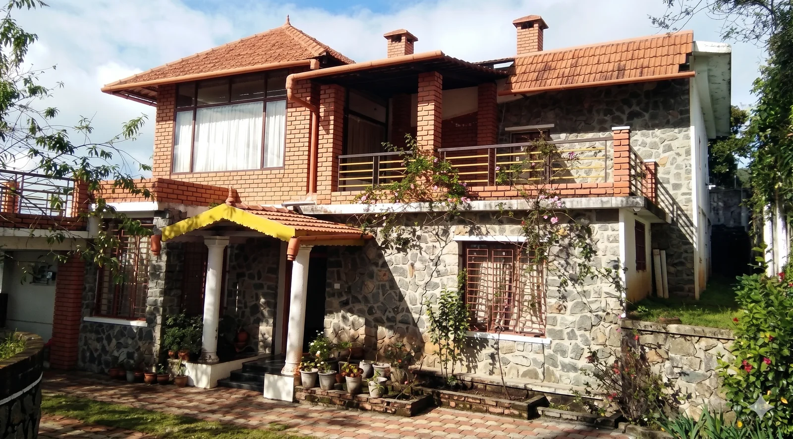

6 to 8guests
One cottage
A room per couple or family.
Private stays for families and groups
Cottages Kodaikanal offers a 4 BHK homestay in Kodaikanal for families and groups, with kitchen, parking and a quote within the hour.

Pick a cottage, then message your dates. We confirm with the owner and quote in writing.
Family stays
Three generations rarely fit into two hotel rooms. A four-bedroom house fixes that: grandparents get a quiet room, parents get a door that closes, and children get space where noise is welcome.
Big cottages in Kodaikanal come with a kitchen, so a late breakfast never means a walk into town. Stone Crest adds a garden, a play area and a caretaker on a 24/7 help desk, which helps when little ones are along.
Evenings stretch out over cards or a movie, and nobody leaves the group to find a quiet corner.
A room per family branch.
One base for meals.
Space at the gate.
Room for children to play.
Pick by headcount
Friends, a college batch or an office offsite hit the same wall: twelve people spread across three rooms in different corridors. A four-bedroom house keeps everyone on one property, with a shared living room for the evenings.
A large group stay in Kodaikanal works best when the kitchen is shared. Tell us the headcount and the number of couples, and we match beds to people. Most cottages add one or two extra mattresses for a small charge.
A room per couple or family.
Extra mattresses on request.
Hosts 6 to 16 guests.
Planning an offsite? Ask about a common hall for meetings. College groups usually care more about bonfire space and parking.
Compare the six
No single cottage wins for everyone. It depends on whether your family wants a pool, a view or a quiet road.
| Cottage | Known for | Good for |
|---|---|---|
| Stone Crest | Mountain and farm views, garden, play area, caretaker | Families with children |
| Happy Point | Private pool, in-house restaurant, kitchen, about 7 km from town | Couples and families who want quiet |
| Vacation Villa | 6 to 16 guests, heaters, balcony, private parking | Big reunions |
| Hillside Retreat | Private living room, balcony, spacious rooms | Honeymooners and small families |
| Pleasant Homes | Homemade food and attentive service | Families who want meals sorted |
| Olive Garden | Mountain and terrace views, trekking routes nearby | Walkers and view lovers |
Stay types
For most groups a cottage wins: you get a private kitchen and no host nearby, while villas cost more and homestays add a host family.
A private compound, your own kitchen and no host nearby. You get the keys and run the day your way.
A 4 bedroom villa in Kodaikanal is larger and more finished, usually at a higher rate. Browse our villas in Kodaikanal.
A 4 bedroom homestay in Kodaikanal comes with a host family and home-cooked meals. See our Kodaikanal homestays.
Privacy
Your own compound, your own entrance and nobody else's check-in schedule. Each listing says what is private and what is shared, because photos can hide that.
Treat it as a Kodaikanal holiday home for the week: children play late, elders sleep early, and your group sets the pace for meals.
Our cottages
Choose a four bedroom cottage in Kodaikanal from the six below, each one checked in person.

4 bedroomsMountain and farm views, a living room, dining area, garden and play area, plus home-cooked food. A caretaker and 24/7 help desk handle requests.
Enquire about Stone Crest 4 bedroomsPrivate pool
4 bedroomsPrivate poolAbout 7 km from town, with garden and mountain views. It has a private pool, an in-house restaurant and a kitchen for guests who cook.
Enquire about Happy Point4 bedrooms6 to 16 guestsThis 4 bedroom cottage in Kodaikanal hosts 6 to 16 guests. Every bedroom has cosy bedding and a heater, with a balcony, free parking and internet.
Enquire about Vacation Villa
4 bedroomsA step up in finish: spacious rooms, a private living room and a balcony. Boating, trekking and camping are close by.
Enquire about Hillside Retreat
4 bedroomsKnown for delicious homemade food and attentive service, a comfortable pick for families who want meals sorted.
Enquire about Pleasant Homes 4 bedrooms
4 bedroomsMountain and terrace views, with streams close by and trekking routes near the gate.
Enquire about Olive GardenBy the water
Staying by the water means a morning walk on the 5 km loop and a boat ride before the crowds arrive. Exact distance depends on the cottage, and we confirm it before you book.
Evenings suit a slow walk to the market for homemade chocolate and hot tea.
Planning the sightseeing too? Read our guide to the places to visit in Kodaikanal.
Forest side
Further from the lake, this pocket trades shops for pine forest and waterfall trails. The Dolphin's Nose trek starts nearby, and the roads stay calmer.
Pick this side of town for trekking, bonfire evenings and quiet mornings. The cottages here sit closer to the trails than to restaurants, so stock up on groceries first.
Nights run colder, so pack layers and ask about heaters. We can arrange a cab with a driver who knows the last stretch of road.
Amenities
Amenities vary by property, so we list what exists.
Cook your own meals or ask for home-prepared food. A Kodaikanal cottage with kitchen access saves a trip to town each morning.
Vacation Villa has a heater and cosy bedding in every bedroom, which matters from November to February.
Happy Point has a private pool. Want a Kodaikanal cottage with swimming pool? Ask which options are open on your dates.
Parking is available. Tell us your vehicle count and we confirm space.
Several properties have bonfire space. Kodaikanal cottages with fire camp book out weeks ahead in December.
Stone Crest has a caretaker and a 24/7 help desk.
Budget
Simpler furnishing and smaller kitchens keep the rate down, while the private-cottage structure stays the same. We work directly with owners, so no listing site adds its markup.
Every property, whatever its price, is checked for water heaters, bedding and photo accuracy before listing. We would rather call a place basic and clean than oversell it.
The cheapest way to book is to avoid the peak weeks. Four habits help:
Rate card
We do not publish fixed rates, because a cottage costs differently in May than in September. Ask for family stay cottages in Kodaikanal with rates for your dates, and the price we send is the price you pay.
| Season | What to expect |
|---|---|
| April to May, December to January | Peak weeks. Cottages fill first, so enquire a few weeks ahead. |
| Long weekends | Group cottages go quickly. Share your headcount early. |
| Rest of the year | The tightest rates and the most room to negotiate. |
Four steps
If your dates are close, call and we check availability while you wait.
Questions
The best time to visit Kodaikanal with family is April to June for clear views and the flower show, or winter for a cosy stay. Monsoon fills the waterfalls, and peak months fill fast, so book early.
A 4 bedroom cottage in Kodaikanal sleeps a different number at each property, depending on its bed layout. Vacation Villa hosts 6 to 16 guests, and most cottages can add one or two extra mattresses for a small charge.
The Kodaikanal cottage price changes with season, property and group size, so we quote each stay in writing. Message your dates and headcount, and we reply within the hour with options that fit your budget and carry no hidden charges.
Cottages Kodaikanal confirms availability with the owner first, then shares the price, payment steps and cancellation terms in writing. Terms vary by property and season, so every Kodaikanal cottage booking gets its own written terms.
Several properties have a bonfire space, and Kodaikanal cottages with fire camp fill weeks ahead in December. Kitchens come with most cottages, so mention your bonfire and cooking needs when you enquire and we match the right property.
Vacation Villa fits the largest groups at 6 to 16 guests. Send your dates and headcount, and we reply within the hour with real photos and a straight price.